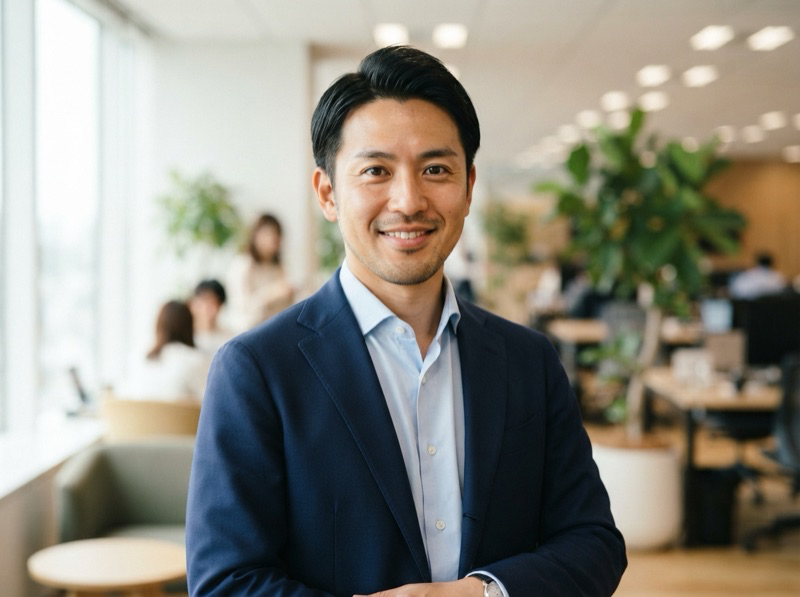

写真
本人許諾のある顔写真。表情・画角の条件は採用するエンジンによって変わります。
A BANK FOR YOUR KNOWLEDGE · 構想プレビュー
写真と声、これまでの経験を預ける。
セミナー、採用説明、顧客対応、営業説明。
必要な場面に、もう一人の社長を送り出す。
サービス構想のプレビューです。画面はサンプルで、AI対話・申し込み受付は未接続です。

預けた知恵は、何に使えますか。
承認した知識を、セミナーや営業説明へ。新しい経験も加えて、使えるTwinへ育てる構想です。
固定サンプル文です。AIは接続していません。
01 仕組み
写真・声・資料からTwinをつくり、日々の経験を加えていく。 社長が話したことを、次の説明にも使える知識として会社に残す設計です。
写真・声・資料と、社長への取材から。すでにある知恵を預かり、Twinの土台をつくります。
新しい事例や考え、よく聞かれる質問を追加。同じ説明のために、毎回ゼロから準備する手間を減らします。
セミナー、採用、顧客対応、営業。その場に合う動画や回答として、預けた知恵を使います。
誰に、どこまで話してよいか。本人の承認と公開範囲を決めて、知識の使い方を管理します。
本人許諾のある顔写真。表情・画角の条件は採用するエンジンによって変わります。
本人が収録した音声。社名・商品名・数字の読み方は発音辞書として整えます。
会社・商品資料、承認済みFAQ、過去のセミナー。足りない部分は短い取材で補います。
用途に合わせて、2つの形で届けます。動画と質問対応は、分けて設計します。
02 用途
どの場面でも、答える範囲は承認済みの内容まで。そこから先は人が受け取ります。 下の画面はすべて固定サンプルで、AIには接続していません。
承認した原稿と資料から説明動画を制作します。会場や日程に左右されず、同じ内容を同じ品質で届けられる状態を目指します。
質疑応答はTwinの動画では完結させません。公開FAQでの受け付け、または担当者への引き継ぎに切り替えます。
動画の制作と、質問への回答は別の機能・別の枠として設計します。
質問：社長が撮影する時間を、どう減らすのですか。
固定サンプル回答：写真・音声・過去の説明資料をもとに、承認原稿から動画を作る設計です。新しいテーマは取材で補い、公開前に社長が確認します。
サービスの説明動画と公開範囲のFAQを置き、関心と質問を担当者へ渡します。初回商談が「説明」から「相談」に変わる状態を目指します。
価格の特別承認、契約の締結、返金の確約は、いずれもTwinでは行いません。人の判断に戻します。
予約や問い合わせは既存の窓口へつなぐ設計です。このページでは送信しません。
質問：動画と、質問に答えるTwinの違いは？
固定サンプル回答：動画は承認した原稿を繰り返し再生します。FAQは資料から質問に答える方式です。まず動画とテキストFAQから始め、顔と声の対話は拡張を想定しています。
会社の考え方、仕事の内容、求める人物像を社長の言葉で説明します。会社説明会の日程に入れない候補者にも同じ内容を届けられる状態を目指します。
採否の判断、個別の条件、選考の連絡は人が行います。Twinは説明と、公開している範囲の質問受付までです。
公開してよい内容と社内限定の内容は、知識として分けて持ちます。
質問：会社の考え方も伝えられますか？
固定サンプル回答：理念や経営者の考えを、顔・声と承認した資料から説明する構想です。採用の条件や選考判断は、担当者が個別にご案内します。
商品の内容、導入の手順、サポートの範囲を、承認済みの資料の範囲で説明します。一次説明と質問の受け付けまでが担当範囲です。
資料にない質問は、推測で答えずに保留します。そのまま担当者へ引き継ぎ、誰に渡したかを記録します。
「社長の判断を完全に再現する」とは訴求しません。
質問：最初に何を用意すればよいですか？
固定サンプル回答：本人の許諾がある写真と音声、会社・商品の資料をご用意ください。FAQやセミナーの録画も活用する想定です。追加の収録条件は、利用するエンジンに合わせて確認します。
いずれも提供設計案です。現時点で納品済みの動画・FAQはありません。
03 運用
一度預けて終わりにせず、新しい経験や方針を加えていく。 CEOTwinが目指すのは、取材・整理・本人承認・更新を引き受け、蓄えた知恵を仕事で使い続けられる状態を保つことです。
社長への短い取材を毎月。新しい事例、変わった方針、よく聞かれた質問を拾います。
出典・更新日・社外に出してよいかを付けて整理。古い価格は失効させます。
公開前に本人が内容・声・読み方を確認。誰が何を認めたかを記録します。
関心と質問を、既存の問い合わせ先・予約先・担当者へつなぎます。
質問ログから、次の営業説明・次のセミナー・追加FAQをつくります。
公開してよい商品情報と、社内限定の判断・ルールは別の知識として持ちます。社外の回答に内部情報を混ぜないよう、公開範囲を分けて設計・検証します。
資料に根拠がない質問は推測で答えず保留し、担当者へ引き継ぎます。架空の確約はしない設計です。
契約の締結、返金の確約、価格の特別承認、採否の判断はTwinの範囲外です。必ず人が決めます。
ここに書いた優位性は仮説で、競合との差はまだ実証していません。独占技術・品質優位・成果実績は主張しません。 四半期に数本の動画で足りる会社には、毎月の課金は割高になる可能性があります。
04 比較
生成ツール、知識を使う対話サービス、本人動画の制作サービス。 どこまで自社で運用したいかで、合う選択肢は変わります。 各社の料金は2026年10月2日に公式ページで確認した表示です。
| サービス | 主な役割 | 公開料金（2026-10-02 確認） | 向く使い方 |
|---|---|---|---|
| HeyGen海外・ツール | 本人アバターと声で説明動画をつくるツール。制作は利用者自身。 | Creator 29USD／月・600クレジット 出典：https://www.heygen.com/pricing | 自分で台本を書き、動画を数多くつくりたい。 |
| Delphi海外・ツール | 本人の知識と口調を使う対話。音声対話、サイト埋め込み。 | Builder 99USD／月（月払い表示） 出典：https://www.delphi.ai/pricing | 自分の知識を自分で入れ、対話で使いたい。本人映像のリアルタイム対話の条件は、公開料金表からは確定できません。 |
| Tavus海外・ツール | 本人の顔・声で対話。資料の参照、外部ツール連携、開発者向けAPI。 | Builder 59USD／月・対話175分・同時3接続 出典：https://www.tavus.io/pricing | 自社のサービスや画面へ、対話機能を組み込みたい。 |
| AvaTwin（グラッドキューブ）国内・制作 | 本人動画の制作。資料をもとに答えるチャットボットは別メニュー。 | スポット20万円／本（税抜・1本30分以内）、年4本64万円 出典：https://www.glad-cube.com/service/avatwin-ir/ | 年に数本の本人動画を、外注で制作したい。 |
| CEOTwin（当社）提供設計案・未公開 | 知識の整理、台本の下書き、本人承認、毎月の更新までを含む運用サービス（設計案）。 | 仮・税別：初期19.8万円／月4.98万円〜（未確定） 社内の価格たたき台です。公開された販売価格ではありません。 | 台本を書く時間がなく、毎月の更新まで任せたい。 自社が負ける点：ツールを自分で使って制作・運用できる方には割高です。生成品質は採用するエンジンに依存します。 |
05 料金
動画で届ける。質問に答える。顔と声で対話する。 月額の案には、知識を整え、更新し、仕事に使える状態を保つ運用を含めます。料金・提供範囲は実証後に確定します。
発信
枠は完成尺での上限（仮）。撮影訪問、翻訳、配信代行は別見積。
営業・FAQ
まず販売を検証する主力案。初回の実証は動画＋テキストFAQの最小構成から。
対話
品質と原価を測ってから販売条件を決める拡張案。超過単価は未決定で、上限到達時は担当者へのご案内に切り替えます。
無制限の利用はお約束しません。生成し直し、追加制作、CRMへの書き込み、個別開発は別枠です。
相談ボタンはローカルの検討メモを作るだけです。送信も申込受付も行いません。
06 試算
社長が同じ説明を繰り返している回数と1回の長さを入れると、月あたりの時間が出ます。 判断材料として、まず現状の量を把握するための計算です。
回数 × 1回の分数 ÷ 60 で計算しています。
07 質問
社長の写真・声・知識を預かり、蓄積し、動画や質問対応で使う仕組みを「銀行」にたとえています。CEOTwinのサービスコンセプトで、金融の預金や運用を扱うものではありません。
知識を残すことに加え、セミナーや営業など、実際の仕事で使える状態に整えることを目指します。
本人と会社が認めた範囲で使う設計です。社外に出してよい知識と社内限定の知識を分け、用途ごとの承認と、担当者への引き継ぎを決めます。
保存先、利用権限、契約終了時の返却・削除の条件は未確定です。正式提供に向けて決める事項として扱います。
本人許諾のある写真、本人が収録した音声、会社・商品の資料、承認済みFAQ、過去のセミナー動画があれば検討を始められます。足りない部分は短い取材で補います。
写真だけで開始できるエンジンもありますが、高品質な本人再現に追加の動画収録や同意映像が必要かは、エンジン選定時に確認します。
できません。Twinが扱うのは、承認した資料とFAQの範囲の説明と回答までです。「社長の判断を完全に再現する」とは訴求しません。
契約の締結、返金の確約、価格の特別承認、採否の判断は人が決めます。
原稿・声・読み方・内容を本人が確認してから公開する設計です。誰がどの内容を認めたかを記録し、古くなった価格や方針は失効させます。
公開してよい社外向けの知識と、社内限定の判断・ルールは分けて持ちます。
推測で答えずに保留し、担当者へ引き継ぎます。架空の実績や確約を作らない設計を前提にしています。
ただし、誤回答が起きないことを保証するものではありません。公開範囲と禁止する回答を事前に決め、試験で確認してから使います。
まだです。CEOTwinは提供設計案の段階で、正式な受付は開始していません。このページは社内検討用のローカルサンプルです。
相談ボタンもローカルの検討メモを作るだけで、入力内容はどこにも送信されません。写真や音声のアップロードもできません。
社長の写真・声・経験を預かり、必要な場面にもう一人の社長を送り出す。 CEOTwinは、会社に知恵を蓄えて使う「ツイン銀行」の構想です。提供内容・料金・開始時期は未確定です。
ボタンは画面イメージとローカルの検討メモのみ。送信・申込受付は行いません。
いずれも第三者調査の数値で、CEOTwinの導入成果ではありません。母集団・時期・定義が異なるため、合算や比較はできません。